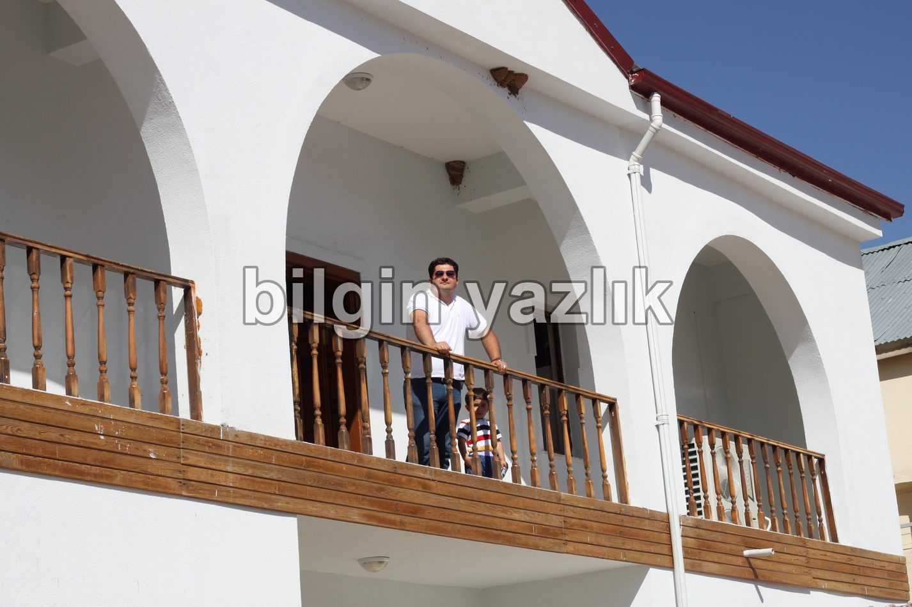
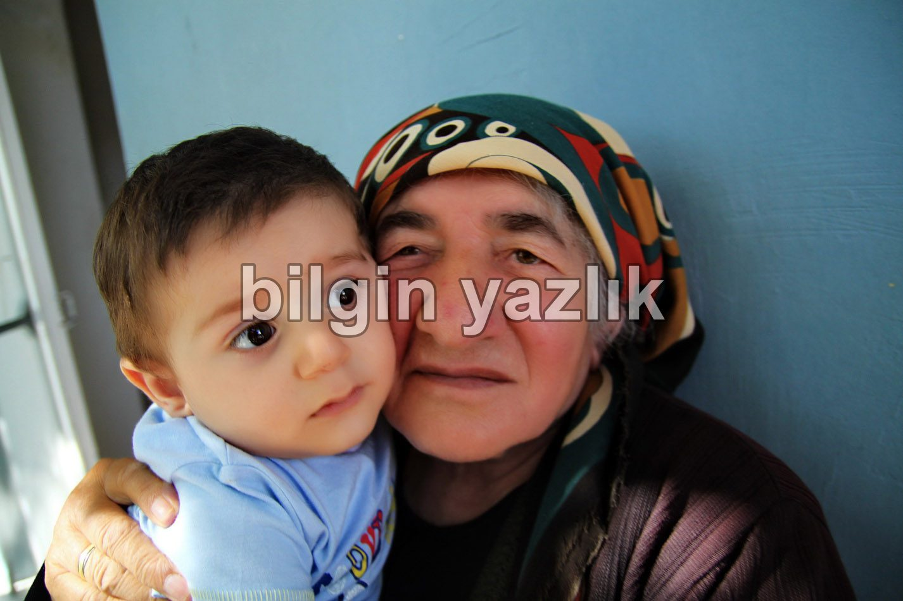
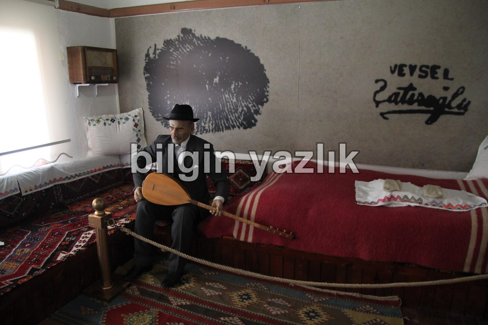

İç Anadolu · 29 Ekim 2014
Aşık Veysel’in Müze Evi
Sivas ili Şarkışla ilçesi Sivrialan köyü’nde doğmuş ve yaşamış Aşık Veysel. Köy yeşillikler içinde çok güzel bir konumda.
Sivrialan köyü Aşık Veysel’in doğduğu ve yaşadığı köy, bu köyde yaşadığı ev bugün müze haline getirilmiş.
Müze son teknoloji cihazlarla donatılmış durumda.
Müze evin karşısında Zöhre Başer yaşıyor.
Zöhre hanım Aşık Veysel’in en büyük kızı.
Eve ziyarete gitmişken Zöhre ananın elini de öpmek gerekir.
Tam Konumu:
Sivrialan
Türkiye
39.460808, 36.165384



Bu yazı taliyol arşivinden taşınmıştır. · özgün kayıt